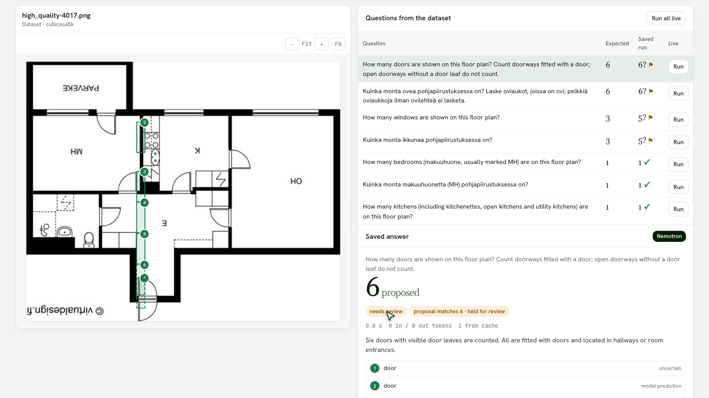
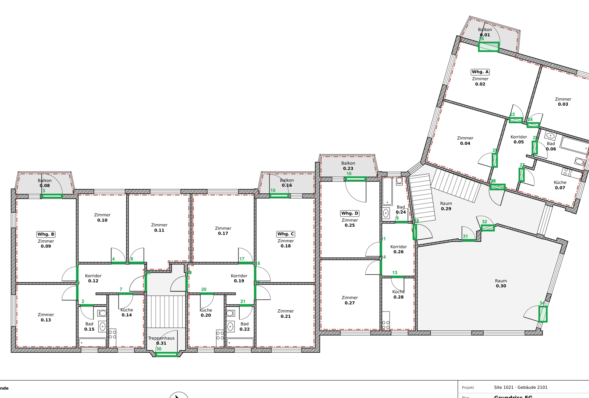
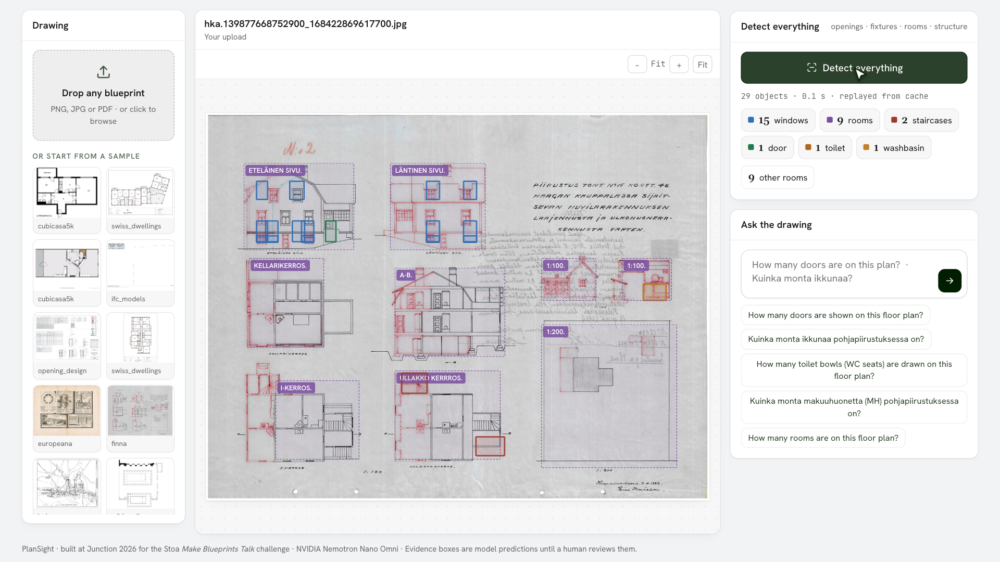
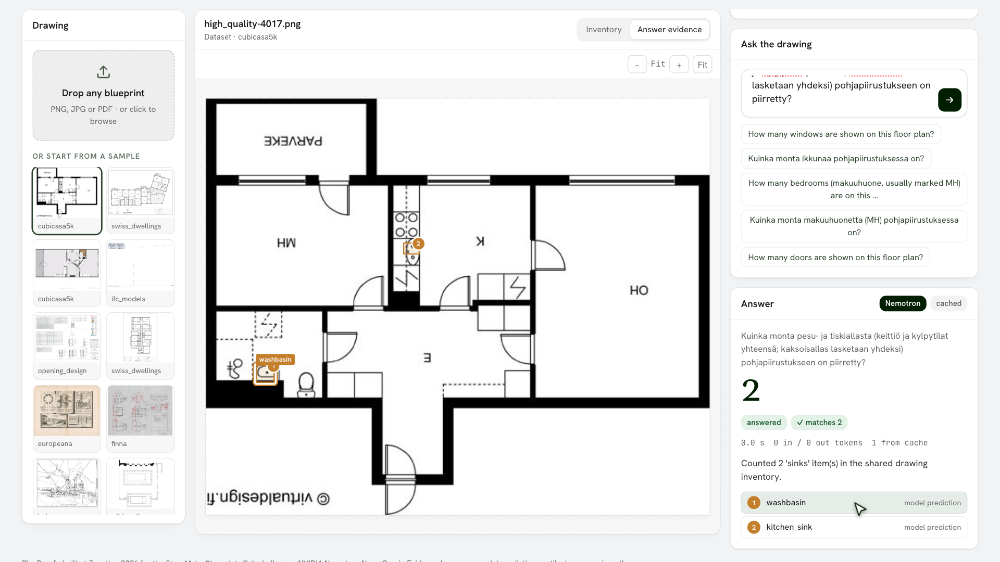
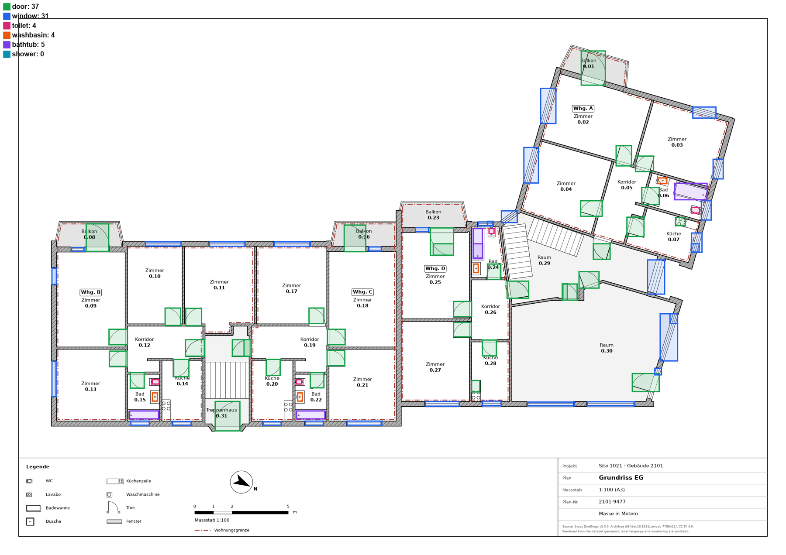
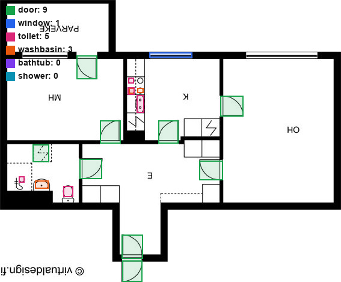

Ask any blueprint a question, in any language.
Every answer in your drawings, in plain sight.
Right: Nemotron's answer "6 doors" happens to be correct, but its boxes form an invented column. PlanSight's guard flags it as needs review.

CAD and BIM files sit next to them in M-Files, SharePoint and Dalux. If we have the source, we read it, exactly and for free.
NVIDIA Nemotron Nano Omni returns evidence, not answers: a JSON inventory of boxes that Python validates and counts.
When the evidence looks wrong, PlanSight says needs review and shows its proposal, instead of a confident wrong number.
Plan rendered from an IFC model, or the .ifc itself
Storey/room/model scope, unit-scaled Qto sums, room areas, GlobalIds as evidence
0 tokens · 100%
PDF with a same-named DXF
Entities counted per layer and mapped back onto the PDF page as numbered boxes
0 tokens · 99%
Scans and raster plans
Strict JSON evidence (0..1000 boxes), Python counting, de-duplication, invented-pattern guard, abstention
~1k tokens / question
Prediction: answer · status (answered / needs review) · evidence with provenance (dxf_entity, ifc_entity, model_prediction) · justification · tokens and latency. All of it is drawn live in the PlanSight app and exported to a review report.
IfcSpace 414B-5-003-0012J_oFeqlHDNPq7R3anXaugA reviewer can open the model at that GlobalId and check in seconds. Route: ifc-takeoff-v1.




YOLO11n, 2.6M parameters · 61k boxes generated from 526 DXFs, zero hand labelling · mAP@50 0.89 on held-out sites · every CAD file Stoa connects makes it better.
| Dataset | Questions (full set) | Accuracy | Route |
|---|---|---|---|
| Swiss Dwellings | 37,584 | 99.1% | DXF · 99.0% on 18,528 held-out questions |
| IFC models | 3,062 | 100% | IFC take-off · 3,062 / 3,062, 9 languages |
| CubiCasa5K scans | 85,514 | 43% (55% of answered) | Nemotron Nano Omni |
| Opening Design sets | 64 | 12.5% | Nemotron Nano Omni |
Dataset scoring rules: exact counts, ±2% on areas, lengths and volumes. Sample of 805 questions, 6 whole drawings per folder, Swiss from held-out sites only. IFC-Bench free-text answers are not gradable by exact match.
tokens for ~1/3 of all questions (CAD/BIM routes), ~30 ms each on a laptop CPU
active parameters: Nemotron 3 Nano Omni is a 30B mixture-of-experts
tokens per question on average over all 127k questions
requests per vision question: one cached inventory answers EN and FI
Nemotron-3-Nano-Omni-30B-A3B), matching Stoa's "held in the EU, never trained on".99–100% on CAD/BIM-backed drawings; abstains instead of guessing on scans; measured with the dataset's own scoring rules.
Numbered boxes on the real page, IFC GlobalIds, route and one-line reason per answer; a live app to detect or ask on any drawing, and a benchmark tab to replay every question.
The blueprint's own source as ground truth; CAD files as free detector labels; a guard against invented evidence.
0 tokens for a third of questions; 3B-active Nemotron for the rest; language-shared cache; open weights.
Ask any blueprint a question, in any language.
Every answer in your drawings, in plain sight.
Code: github.com/thierry-silbermann/Junction_2026_Finland_Make_Blueprints_Talk
Live app: drawingqa serve → Live blueprint + Benchmark tabs · static report in project_submission/demo